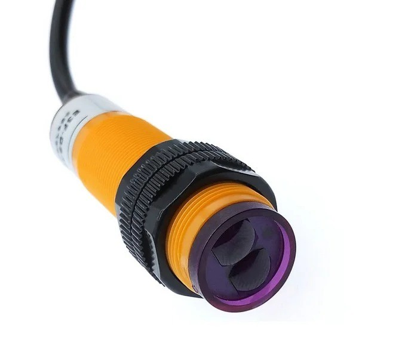
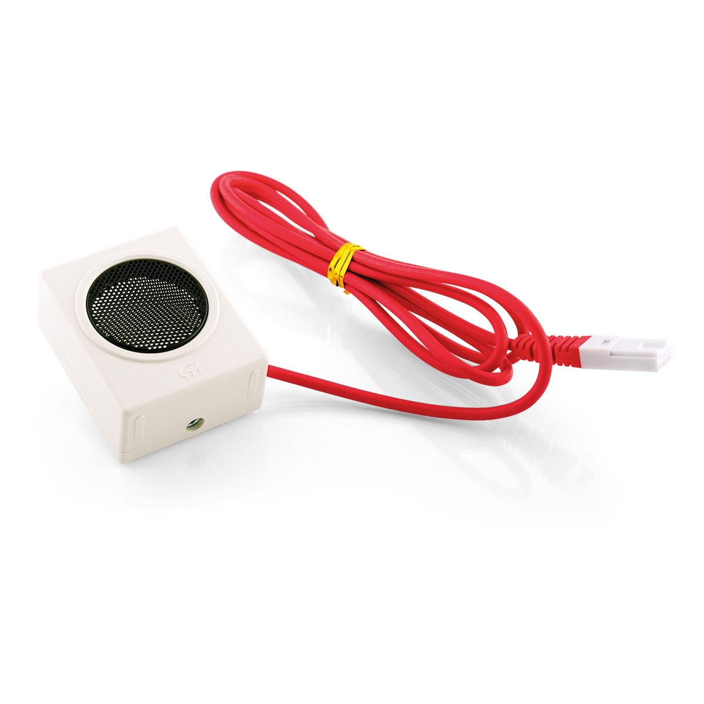
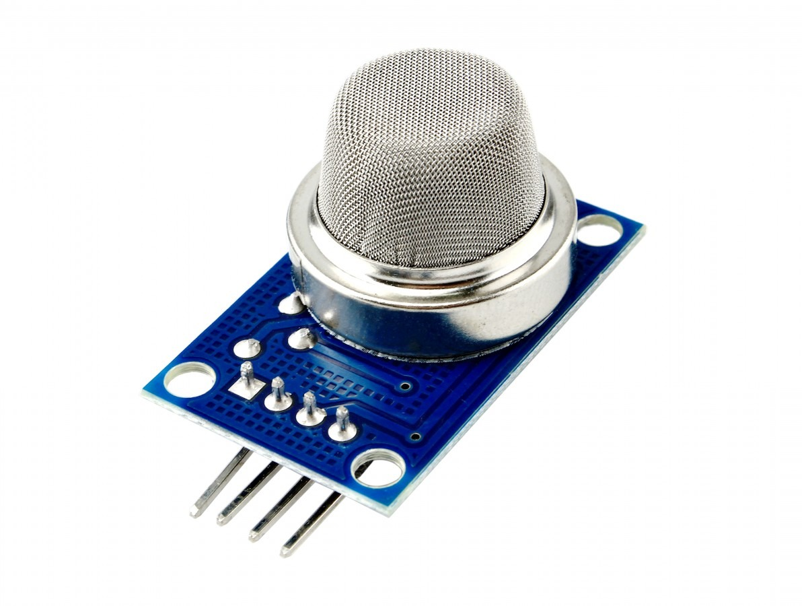
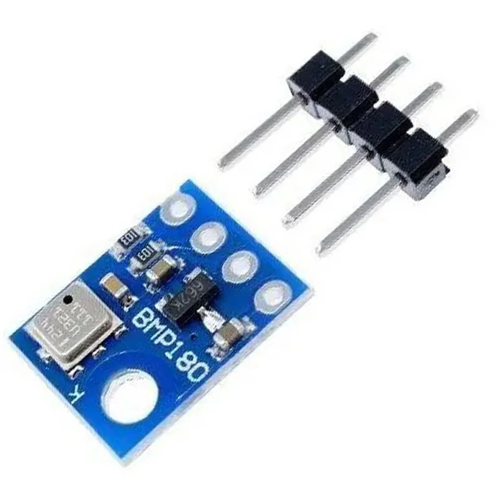
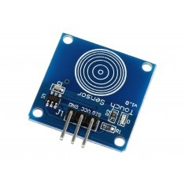

Tipos de sensores IoT
Conheça exemplos de sensores usados em projetos de Internet das Coisas e automação.
Sensor de Temperatura

Identifica variações de calor ou frio em um ambiente ou objeto.
Sensor de Proximidade

Detecta quando um objeto está próximo sem precisar de contato físico direto.
Sensor de Umidade

Mede a quantidade de vapor de água presente no ar do ambiente.
Sensor de Luz

Mede a intensidade da luz no ambiente para ajustar brilho ou iluminação.
Sensor de Movimento

Detecta presença de pessoas através da variação de calor corporal.
Sensor Ultrassônico

Calcula a distância até objetos usando ondas sonoras refletidas.
Sensor de Gás/Fumaça

Identifica a presença de gases ou fumaça que podem indicar perigo.
Sensor de Pressão (Barômetro)

Mede a pressão do ar para indicar clima ou altitude.
Sensor de Toque

Reconhece o contato físico direto em superfícies sensíveis ao toque.